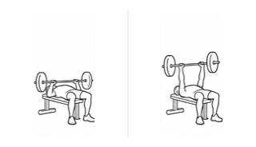
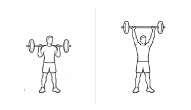
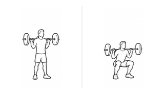
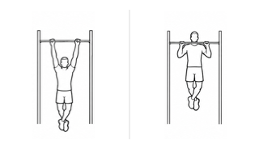
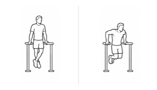
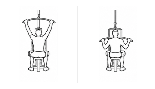
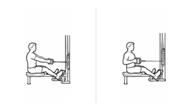
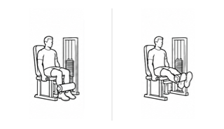
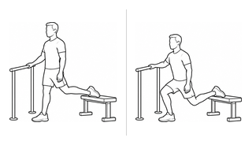

後腳抬高蹲：具名風格比較
前八張為原核准風格參考，最後一張為新增候選。不是獨立盲測或專業核准。手機寬度採詳細頁實測卡框，不宣稱 picker 已量測。
原始尺寸：320px
benchPress
shoulderPress
squat
pullUp
dip
latPulldown
seatedRow
legExtension
catalog-rear-foot-elevated-split-squat
320px viewport 詳細頁：254px
benchPressshoulderPresssquatpullUpdiplatPulldownseatedRowlegExtensioncatalog-rear-foot-elevated-split-squat375px viewport 詳細頁：309px
benchPressshoulderPresssquatpullUpdiplatPulldownseatedRowlegExtensioncatalog-rear-foot-elevated-split-squat390px viewport 詳細頁：324px
benchPressshoulderPresssquatpullUpdiplatPulldownseatedRowlegExtensioncatalog-rear-foot-elevated-split-squat